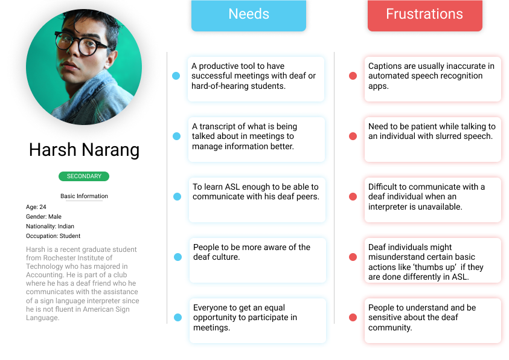
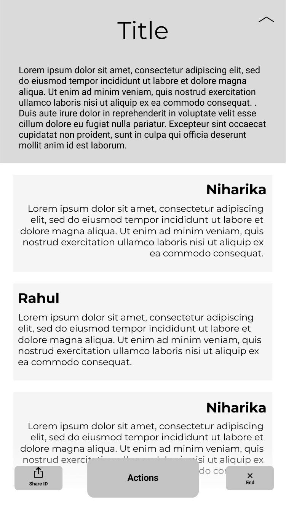

Problem
Imagine a situation - a group of people in a meeting, trying to brainstorm or discuss ideas
by collaborating and putting forth their viewpoints. This group of people consist of people
who can hear and speak comfortably, and those who are hard-of-hearing or have difficulty
speaking. In such a scenario, it becomes difficult for the latter set of people to easily
put their points forth or contribute equally to the discussions. The reasons for this might
be:
- It could be difficult for the interpreter to keep up with the pace if a speaker is talking
fast and would take more time to interpret and explain to the hard-of-hearing individual.
- If there are multiple speakers speaking, it would be difficult for the interpreter to
explain (by pointing out) and the deaf individual to understand who’s speaking what, and it
could lead to a confusion.
Target Users
Hard-of-hearing
individuals
User Research
Interviews
We met with a variety of
people to understand their pain points and needs. Since, we were
carrying this out in a university setting, we interviewed hard-of-hearing students, hearing
students who had been in team meetings with deaf students, and American Sign Language
interpreters.
Affinity Diagram
An interview with these
individuals gave us a clear idea of the problems they faced and it
helped us create an affinity diagram.
The detailed affinity
diagram can be found here!
Personas
Creating the affinity
diagram helped us create primary, secondary and anti personas.

[Primary Persona 2]

[Secondary Persona 1]
Design Solution
An application that converts speech-to-text and assists the user in keeping track of the
points in the discussion. When a person in the team speaks, the application converts the
transcribes the speech and displays it on the screen for the hard-of-hearing team members.
The application would have the capability of separating each speaker so that the deaf member
is aware of who the speaker is whenever someone speaks.
In cases where the deaf member feels that a speaker is speaking fast (text conversion is
fast) and that it is difficult to follow what the person is saying, or if they want to put
forth their own points, or ask a question, the application has clickable buttons which on
clicking, produce a sound as to notify the speakers that the deaf member has requested for a
pause. This would help the discussion to progress smoothly while providing every member in
the team to having equal chance to voice their ideas and have a say in the discussion.
Paper Prototypes
We created paper
prototypes of the application design for the interviewees to test and
recieved feedback on how certain components could be placed/oriented differently on the
screen which would make it easier for the users to access or interact with them.

[Original Prototype]

[Prototype Changes 1]

[Prototype Changes 2]
Wireframes
Once the users interacted
with the paper prototypes and found the components intuitive, we
created wireframes according to the prototypes.

[Description Screen]
Hi-fi
The color theme we
selected for the application was blue and black. The components were a
calm shade of blue, so as to prevent the user from getting too distracted by the colors
while reading the text, while still giving the user a restful experience. The header and
footer background was black, so as to make the header stand out to keep the user aware of
the chat they were on, adn to highlight the action buttons that were available for use.
Since, the black color is used at the top and bottom border, it does not actively affect the
user's concentration on the middle of the screen where the content is displayed. As for the
font, we decided to go with different font weights of Roboto because of its simplicity and
legibility.

[Description Screen]
The design solutions for the project can be found here!
This course project helped
me understand the entire process of user experience design which
included inquirying and interviewing people to understand more about their needs and goals,
the need to come up with and brainstorm solutions which would meet the requirements of the
customers, and designing these solutions while keeping the users in the loop and taking
their feedback on how the design seems to fit their needs. The primary goal of the whole
process being to finalize and create a visually appealing and intuitive design which makes
the lives of the users easier.